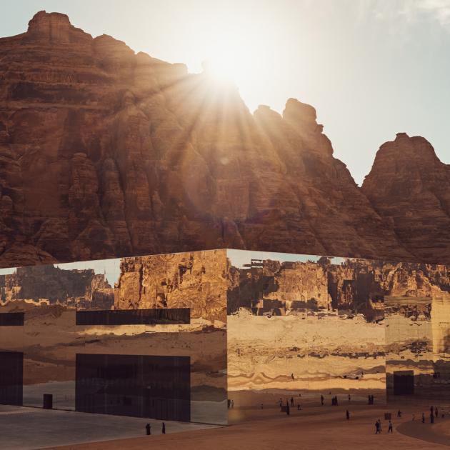

Old Town is a historic district with ancient mud-brick buildings and vibrant culture, offering a glimpse into the region's heritage.

Maraya is a stunning architectural marvel in Al-Ula, known for being the world’s largest mirrored building. This innovative structure blends seamlessly with the surrounding desert landscape, reflecting the beauty of its natural surroundings. Maraya hosts cultural events, concerts, and exhibitions, making it a vibrant hub for art and entertainment. Its unique design and striking appearance make it a must-see destination in Al-Ula, showcasing the fusion of modern creativity with the timeless desert backdrop.
Read More